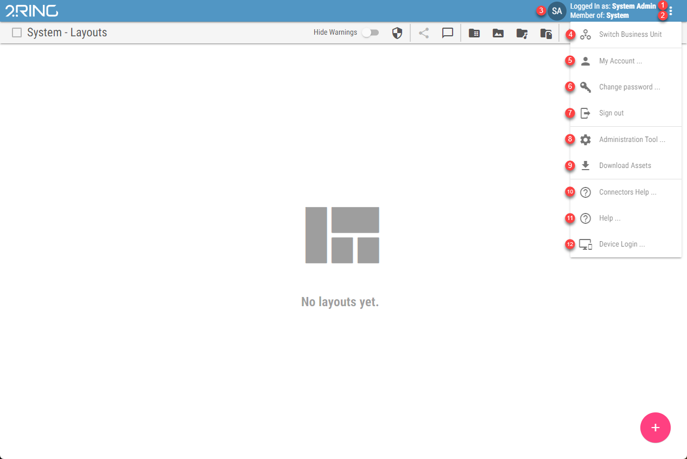
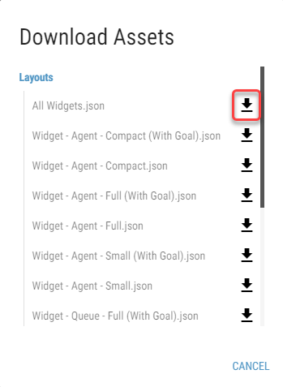

Application Menu¶
The application menu contains essential application actions. It can be accessed in any part of the application, when logged in. The menu is opened by clicking the three dots icon, located on the top right corner of the screen.
Figure 1: Application Menu
Username of the logged in user
Business Unit to which the user belongs
Logged in user´s initials
Business Unit Switch
Available only for users that have more than one Business Unit accessible. For more information see Switching Business Unit chapterLink to the Account Management tool
Not available when logged in using Okta/Entra ID account or when logged in using TV login flowChange password option
Not available when logged in using Okta/Entra ID account or when logged in using TV login flowSign out option
Link to the DW Administration Tool
Available only if system, tenant or BU admin is logged in. Not available when logged in using TV login flowDownload assets
Aavailable only if system, tenant or BU admin is logged inIn the following dialog, all default assets, such as Layouts, Widgets or CSV files, can be downloaded by clicking the download button next to the desired asset.
Link to the connectors documentation
Link to the DW documentation
Link to the Device Login page
Not available when logged in using TV login flow